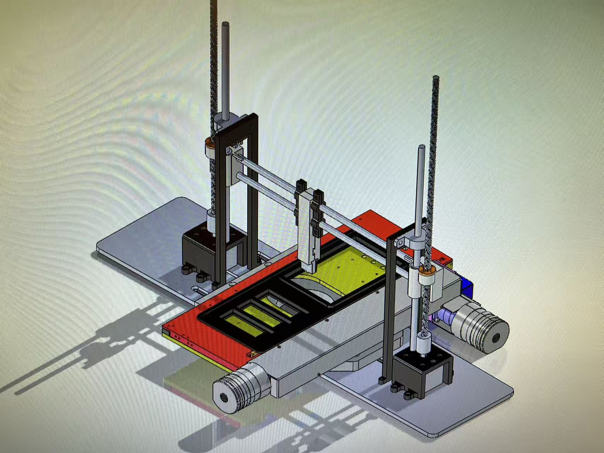
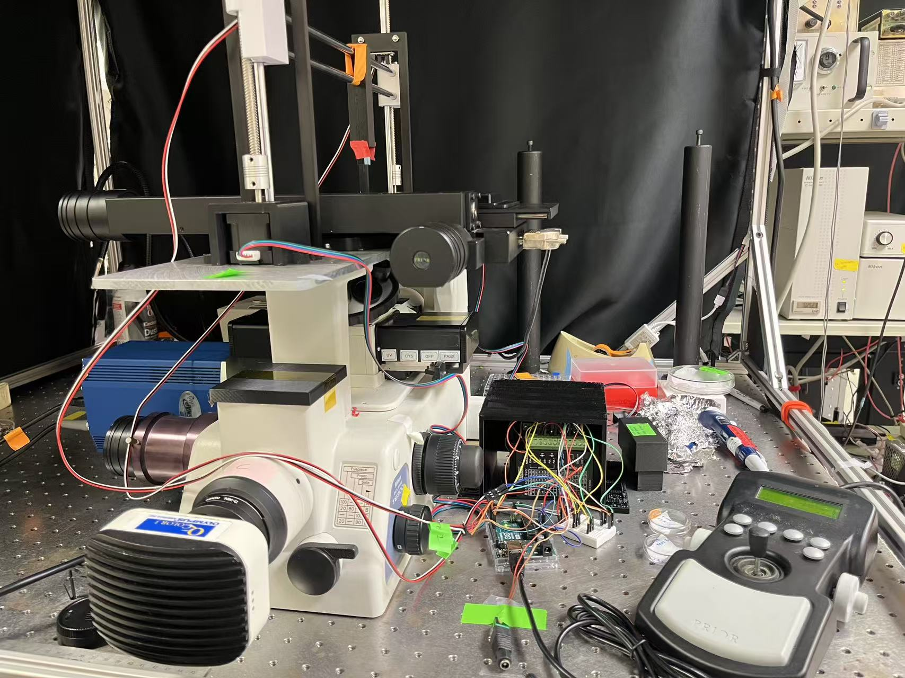

My research interests lie at the intersection of robotics, control, and mechatronic system design, with a particular focus on robot locomotion, manipulation, and hardware-software integration. I am especially interested in bio-inspired robotic systems, autonomous sensing, and experimental platforms that bridge mechanical design with real-world performance.
I am currently conducting research in the Autonomous Insect Robotics Lab at the University of Washington, where I work on bio-inspired robotic systems for locomotion and sensing. My work focuses on developing lightweight robotic platforms and exploring mechanisms that enable robust movement in constrained or difficult-to-access environments. This research combines mechanical design, actuation, system integration, and experimental validation to study how biologically inspired principles can improve robotic mobility and adaptability.
The 1.02 g hopping system. It consists of a coreless direct- current (DC) motor that actuates in direct drive mode, using a pulley and string to lift itself against a rigid tower. A laser-microfabricated carbon fiber sarrus linkage constrains the motor to translational motion to minimize rotation during the aerial phase. Retraction and self-righting is performed by reversing the motor to pull on the retraction string on the same pulley. A protective roll cage stabilizes orientation onto the foot. Separators on the pulley between the two strings prevent entanglement.
In this project, we investigated vortex generator designs for cryogenic pipe systems under NASA-supported research. The objective was to improve heat transfer by disrupting the Leidenfrost vapor barrier that forms along the walls of cryogenic transfer lines. My work involved analyzing different flow disruption geometries to balance enhanced heat transfer, reduced boil-off, and acceptable pressure losses. This project strengthened my experience in experimental thermal-fluid systems, design optimization, and applied transport phenomena.
I developed an automated calibration and motion-control system for a single-cell printing platform integrating a motorized Z-axis, XY microscope stage, and camera-based alignment. The goal was to convert a manual, operator-dependent spotting process into a repeatable and safe automated workflow. I built a Python Tkinter graphical user interface to guide users through calibration, capture critical motion parameters, and validate user inputs before execution. These calibrated values were then passed into a threaded automation sequence that coordinated multi-axis motion while maintaining a responsive user interface. The resulting system improved repeatability, reduced operator error, and enabled reliable automated spotting with real-time feedback and abort safety.


In the UW Fluids Lab, I developed a magnet-controlled particle releaser with eight compartments to support controlled experimental studies of flow dynamics. I integrated laser and camera tracking systems to monitor more than 125 experimental runs and processed the resulting velocity-field data using MATLAB and PIVmat. This work enabled precise Particle Image Velocimetry analysis and deepened my experience with experimental fluid mechanics, instrumentation, and quantitative data analysis.
US Provisional Patent: “Systems for Vortex Generator Enhanced Heat Transfer”
Serial Number: 63/807,431